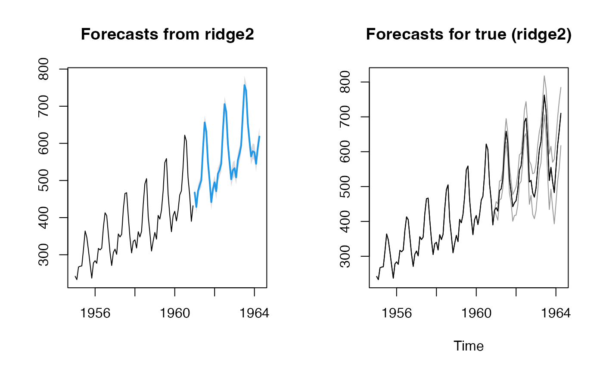

stacking-ridge2f.Rmd
y <- AirPassengers
y_train_test <- misc::splitts(y)
y_train <- y_train_test$training
y_test <- y_train_test$test
h_test <- length(y_test)
fcast_ets <- forecast::forecast(forecast::ets(y_train), h=h_test)$mean## Registered S3 method overwritten by 'quantmod':
## method from
## as.zoo.data.frame zoo
fcast_arima <- forecast::forecast(forecast::auto.arima(y_train), h=h_test)$mean
fcast_theta <- forecast::thetaf(y=y_train, h=h_test)$mean
par(mfrow=c(1, 2))
plot(ahead::ridge2f(y_test, lags=10L,
xreg = cbind(fcast_ets,
fcast_arima,
fcast_theta),
h=40L,
B=250L,
type_pi="blockbootstrap"
))## | | | 0% | |= | 1% | |= | 2% | |== | 2% | |== | 3% | |=== | 4% | |=== | 5% | |==== | 5% | |==== | 6% | |===== | 7% | |===== | 8% | |====== | 8% | |====== | 9% | |======= | 10% | |======== | 11% | |======== | 12% | |========= | 12% | |========= | 13% | |========== | 14% | |========== | 15% | |=========== | 15% | |=========== | 16% | |============ | 17% | |============ | 18% | |============= | 18% | |============= | 19% | |============== | 20% | |=============== | 21% | |=============== | 22% | |================ | 22% | |================ | 23% | |================= | 24% | |================= | 25% | |================== | 25% | |================== | 26% | |=================== | 27% | |=================== | 28% | |==================== | 28% | |==================== | 29% | |===================== | 30% | |====================== | 31% | |====================== | 32% | |======================= | 32% | |======================= | 33% | |======================== | 34% | |======================== | 35% | |========================= | 35% | |========================= | 36% | |========================== | 37% | |========================== | 38% | |=========================== | 38% | |=========================== | 39% | |============================ | 40% | |============================= | 41% | |============================= | 42% | |============================== | 42% | |============================== | 43% | |=============================== | 44% | |=============================== | 45% | |================================ | 45% | |================================ | 46% | |================================= | 47% | |================================= | 48% | |================================== | 48% | |================================== | 49% | |=================================== | 50% | |==================================== | 51% | |==================================== | 52% | |===================================== | 52% | |===================================== | 53% | |====================================== | 54% | |====================================== | 55% | |======================================= | 55% | |======================================= | 56% | |======================================== | 57% | |======================================== | 58% | |========================================= | 58% | |========================================= | 59% | |========================================== | 60% | |=========================================== | 61% | |=========================================== | 62% | |============================================ | 62% | |============================================ | 63% | |============================================= | 64% | |============================================= | 65% | |============================================== | 65% | |============================================== | 66% | |=============================================== | 67% | |=============================================== | 68% | |================================================ | 68% | |================================================ | 69% | |================================================= | 70% | |================================================== | 71% | |================================================== | 72% | |=================================================== | 72% | |=================================================== | 73% | |==================================================== | 74% | |==================================================== | 75% | |===================================================== | 75% | |===================================================== | 76% | |====================================================== | 77% | |====================================================== | 78% | |======================================================= | 78% | |======================================================= | 79% | |======================================================== | 80% | |========================================================= | 81% | |========================================================= | 82% | |========================================================== | 82% | |========================================================== | 83% | |=========================================================== | 84% | |=========================================================== | 85% | |============================================================ | 85% | |============================================================ | 86% | |============================================================= | 87% | |============================================================= | 88% | |============================================================== | 88% | |============================================================== | 89% | |=============================================================== | 90% | |================================================================ | 91% | |================================================================ | 92% | |================================================================= | 92% | |================================================================= | 93% | |================================================================== | 94% | |================================================================== | 95% | |=================================================================== | 95% | |=================================================================== | 96% | |==================================================================== | 97% | |==================================================================== | 98% | |===================================================================== | 98% | |===================================================================== | 99% | |======================================================================| 100%
z_test <- cbind(y_test,
fcast_ets,
fcast_arima,
fcast_theta)
colnames(z_test) <- c("true", "ets", "arima", "theta")
fcast_z_test <- ahead::ridge2f(z_test,
lags=7L,
h=40L,
B=250L,
type_pi="blockbootstrap")## | | | 0% | |= | 1% | |= | 2% | |== | 2% | |== | 3% | |=== | 4% | |=== | 5% | |==== | 5% | |==== | 6% | |===== | 7% | |===== | 8% | |====== | 8% | |====== | 9% | |======= | 10% | |======== | 11% | |======== | 12% | |========= | 12% | |========= | 13% | |========== | 14% | |========== | 15% | |=========== | 15% | |=========== | 16% | |============ | 17% | |============ | 18% | |============= | 18% | |============= | 19% | |============== | 20% | |=============== | 21% | |=============== | 22% | |================ | 22% | |================ | 23% | |================= | 24% | |================= | 25% | |================== | 25% | |================== | 26% | |=================== | 27% | |=================== | 28% | |==================== | 28% | |==================== | 29% | |===================== | 30% | |====================== | 31% | |====================== | 32% | |======================= | 32% | |======================= | 33% | |======================== | 34% | |======================== | 35% | |========================= | 35% | |========================= | 36% | |========================== | 37% | |========================== | 38% | |=========================== | 38% | |=========================== | 39% | |============================ | 40% | |============================= | 41% | |============================= | 42% | |============================== | 42% | |============================== | 43% | |=============================== | 44% | |=============================== | 45% | |================================ | 45% | |================================ | 46% | |================================= | 47% | |================================= | 48% | |================================== | 48% | |================================== | 49% | |=================================== | 50% | |==================================== | 51% | |==================================== | 52% | |===================================== | 52% | |===================================== | 53% | |====================================== | 54% | |====================================== | 55% | |======================================= | 55% | |======================================= | 56% | |======================================== | 57% | |======================================== | 58% | |========================================= | 58% | |========================================= | 59% | |========================================== | 60% | |=========================================== | 61% | |=========================================== | 62% | |============================================ | 62% | |============================================ | 63% | |============================================= | 64% | |============================================= | 65% | |============================================== | 65% | |============================================== | 66% | |=============================================== | 67% | |=============================================== | 68% | |================================================ | 68% | |================================================ | 69% | |================================================= | 70% | |================================================== | 71% | |================================================== | 72% | |=================================================== | 72% | |=================================================== | 73% | |==================================================== | 74% | |==================================================== | 75% | |===================================================== | 75% | |===================================================== | 76% | |====================================================== | 77% | |====================================================== | 78% | |======================================================= | 78% | |======================================================= | 79% | |======================================================== | 80% | |========================================================= | 81% | |========================================================= | 82% | |========================================================== | 82% | |========================================================== | 83% | |=========================================================== | 84% | |=========================================================== | 85% | |============================================================ | 85% | |============================================================ | 86% | |============================================================= | 87% | |============================================================= | 88% | |============================================================== | 88% | |============================================================== | 89% | |=============================================================== | 90% | |================================================================ | 91% | |================================================================ | 92% | |================================================================= | 92% | |================================================================= | 93% | |================================================================== | 94% | |================================================================== | 95% | |=================================================================== | 95% | |=================================================================== | 96% | |==================================================================== | 97% | |==================================================================== | 98% | |===================================================================== | 98% | |===================================================================== | 99% | |======================================================================| 100%
plot(fcast_z_test, "true")